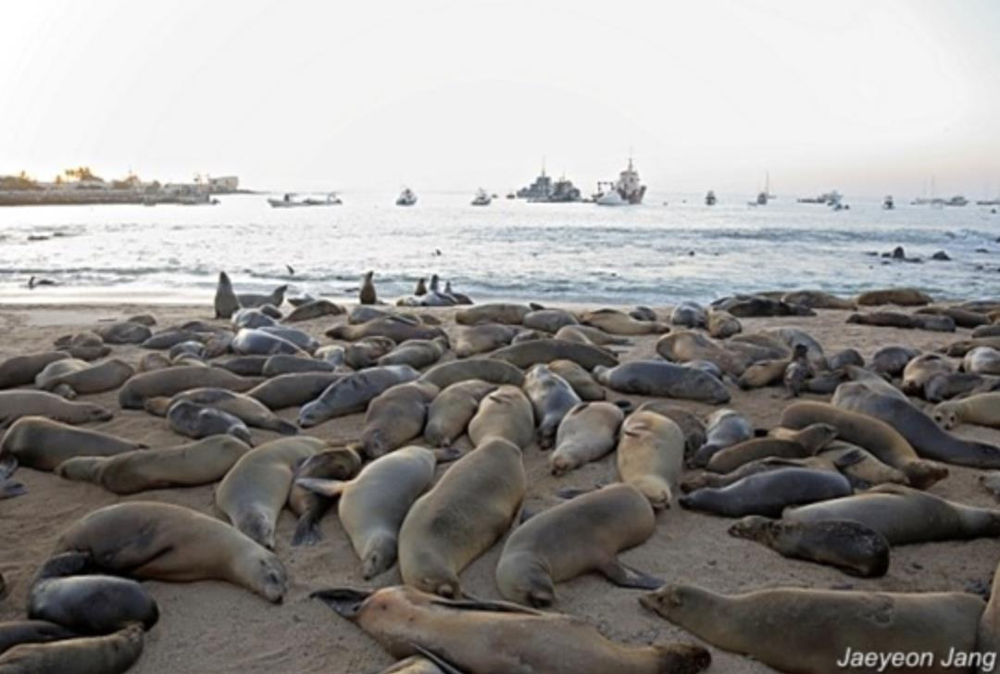

소개
바다사자는 강치라고도 부르며 동해 연안에 서식하던 바다사자속의 포유류 이다.
한반도 동해안 및 일본 열도 해안가에서 주로 서식하였으나, 1900년대 초 상업적인 포획으로 인해 개체수가 급감했다.
1972년 홋카이도 인근 섬에서 확인된 개체를 마지막으로 완전히 모습을 감추었다. 1994년 국제자연보전연맹(IUCN)이 절멸을 선언했다.
외관
수컷 바다사자의 털가죽 색은 어두운 회색이며 암컷은 수컷보다 밝은 색이다. 수컷의 길이는 2.3~2.5m 이며 체중은 450~560kg, 암컷은 1.6m정도이다.
전체적으로 물개와 비슷하게 생겼으나, 수컷은 성숙하면 정수리에 볏모양의것이 돌출하며, 암컷은 정수리 부위에는 돌출 부위가 없다.
특징
주 먹이는 오징어, 명태, 정어리, 연어 등이며 천적으로는 상어와 범고래가 있다.주로 연안지역에서 생활하며, 강 하구나 먼 바다에서도 발견된다.
수명은 최대 30년까지 생존한 기록이 있다.연중 무리를 지어 생활하며, 일부다처제로 한 무리에는 새끼와 함께 20여 마리의 암컷이 포함되며, 계절적인 이동은 잘 알려져 있지 않다.
